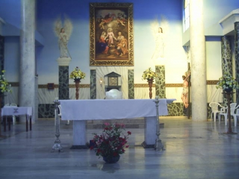

Muzo, pueblo anterior a la conquista, habitado por los indios Muzos tribu muy belicosa, para quienes la guerra era su actividad preferida. Se dedicaban a la agricultura; la que realizaban una vez terminaban su guerras, la minería donde explotaban las minas de esmeralda en forma rudimentaria, las que eran utilizadas como objeto de adorno y trueque entre los clanes.
Además de las anteriores actividades, se dedicaban al pillaje que era una forma de apropiarse de aquellos elementos que necesitaban, especialmente asaltaban a su vecinos los Muiscas. Para ser conquistados por los españoles, estos debieron afrontar una cuenta guerra de aproximadamente veinte (20) años, al término de los cuales los lograron subyugar.
Luis Lancheros fue el primer conquistador que entró a someterlos; confiado en su destreza militar pero sin conocer el territorio enemigo que lo esperaba hacia el año de 1.539: Diego de Martínez fue el segundo que fracaso en el año de 1.544. Melchor de Valdez fue el tercer personaje decidido a castigarlos en el año de 1.550. Le siguió Pedro de Ursúa, hombre hábil y valiente, quiso usar la persecución para someterlos, pero sus planes fallaron en 1.551. Finalmente Luis Lancheross con el auxilio de Juan de Rivera derrotó y subyugó a los Muzos en el año de 1.559.
Cuando Pedro de Ursúa hizo su primer viaje a la región de los Muzos en cumplimiento de una orden de la Real Audiencia, fundó en 1.551 una ciudad en aquella región llamada Tudela; en 1.552 los españoles al versen allí solos, sin víveres, sin armas amenazados cada día más para salvar sus vidas, dejaron al pueblo solo aprovechando la oscuridad de la noche, salieron hacia Santa Fé; al día siguiente los nativos bajaron y arrasaron la ciudad. Luis Lancheross en 1.559 sin haber dominado completamente a los indios Muzos, sitiándose enfermo de gravedad por un flechazo en el pecho, considerando que a un no había fundado una ciudad que sirviera de centro de actividad, reunió a sus oficiales y les expuso la idea, como no podía hacerlo personalmente, autorizó a Francisco Morcillo para que la fundase con la posibilidad de trasladarla de lugar.
Al recuperar de nuevo su salud ordeno a Morcillo que fuese a buscar víveres y un lugar propicio para trasladar allí a su Villa, que había bautizado con el nombre de “ VILLA DE LA SANTISIMA TRINIDAD”. Morcillo siguió el camino de Maripí ( Maripi) al oriente; llegó a las ruinas de Tudela y aquí espero a Lancheros; descansaron varios días para luego abandonarlas por no llenar las aspiraciones de Lancheros; llegando a una hondonada protegida por cuatro ( 4) colinas, a Lancheros le pareció sitio indicado por su buena ubicación cerca de las Minas de Esmeraldas, buena visibilidad, abundantes aguas, buenas tierras y excelente vegetación; fundo la “ VILLA DE LA SANTISIMA TRINIDAD DE LOS MUZOS” en el lugar donde hoy está.
Muzo, pueblo anterior a la conquista, habitado por los indios Muzos tribu muy belicosa, para quienes la guerra era su actividad preferida. Se dedicaban a la agricultura; la que realizaban una vez terminaban su guerras, la minería donde explotaban las minas de esmeralda en forma rudimentaria, las que eran utilizadas como objeto de adorno y trueque entre los clanes.
Además de las anteriores actividades, se dedicaban al pillaje que era una forma de apropiarse de aquellos elementos que necesitaban, especialmente asaltaban a su vecinos los Muiscas. Para ser conquistados por los españoles, estos debieron afrontar una cuenta guerra de aproximadamente veinte (20) años, al término de los cuales los lograron subyugar.
Luis Lancheros fue el primer conquistador que entró a someterlos; confiado en su destreza militar pero sin conocer el territorio enemigo que lo esperaba hacia el año de 1.539: Diego de Martínez fue el segundo que fracaso en el año de 1.544. Melchor de Valdez fue el tercer personaje decidido a castigarlos en el año de 1.550. Le siguió Pedro de Ursúa, hombre hábil y valiente, quiso usar la persecución para someterlos, pero sus planes fallaron en 1.551. Finalmente Luis Lancheross con el auxilio de Juan de Rivera derrotó y subyugó a los Muzos en el año de 1.559.
Cuando Pedro de Ursúa hizo su primer viaje a la región de los Muzos en cumplimiento de una orden de la Real Audiencia, fundó en 1.551 una ciudad en aquella región llamada Tudela; en 1.552 los españoles al versen allí solos, sin víveres, sin armas amenazados cada día más para salvar sus vidas, dejaron al pueblo solo aprovechando la oscuridad de la noche, salieron hacia Santa Fé; al día siguiente los nativos bajaron y arrasaron la ciudad. Luis Lancheross en 1.559 sin haber dominado completamente a los indios Muzos, sitiándose enfermo de gravedad por un flechazo en el pecho, considerando que a un no había fundado una ciudad que sirviera de centro de actividad, reunió a sus oficiales y les expuso la idea, como no podía hacerlo personalmente, autorizó a Francisco Morcillo para que la fundase con la posibilidad de trasladarla de lugar.
Al recuperar de nuevo su salud ordeno a Morcillo que fuese a buscar víveres y un lugar propicio para trasladar allí a su Villa, que había bautizado con el nombre de “ VILLA DE LA SANTISIMA TRINIDAD”. Morcillo siguió el camino de Maripí ( Maripi) al oriente; llegó a las ruinas de Tudela y aquí espero a Lancheros; descansaron varios días para luego abandonarlas por no llenar las aspiraciones de Lancheros; llegando a una hondonada protegida por cuatro ( 4) colinas, a Lancheros le pareció sitio indicado por su buena ubicación cerca de las Minas de Esmeraldas, buena visibilidad, abundantes aguas, buenas tierras y excelente vegetación; fundo la “ VILLA DE LA SANTISIMA TRINIDAD DE LOS MUZOS” en el lugar donde hoy está
.Su fecha de fundación ha sido muy discutida. Los cronistas no coincidieron en ella, pero considerando la fecha en que Lancheros empezó su recorrido y las dificultades sufridas, la fecha mas indicada es el 20 de febrero de 1.559, cumplidas las ceremonias acostumbradas se eligieron empleados: fueron los primeros alcaldes Alfonso Ramirez Gasco y Hernán Patiño García; regidores, Benito de Poveda, Antonio Castiblón de Nayla, Alonso de Salinas Francisco Pérez y Juan Alonso.
Lancheros repartió luego solares entre sus colaboradores y encomendó a los indios, es decir anotar que es el único cacerío fundado por españoles directamente en el Occidente Boyacense.
En el Nuevo Reino la evangelización fue simultánea con la conquista, muchos religiosos acompañaron a los conquistadores en sus expediciones. El día de la fundación de Muzo, el capellán Juan de Santamaría dijo la primera misa, comenzó la construcción del templo lo mismo que los conventos de Santo Domingo y San Francisco.
Fue nombrado párroco por el obispo Fray Juan de los Barrios, el párroco ejerció el curato y organizo la evangelización hasta que murió en 1566. Su cadáver fue enterrado en el templo parroquial de Muzo (Reseña histórica tomada de varios libros de consultas entre los que se encuentran “Muzo un pueblo extinguido del Profesor Trinidad Parra y la Primera Revista publicada del Colegio Departamental Mixto San Marcos)
Muzo fue en la antigüedad una villa grande según lo indican las ruinas que a un se encuentran. La tradición de algunos viejos conserva memoria de cinco iglesias y dos conventillos
El municipio de Muzo está ubicado en el Occidente del Departamento de Boyacá y cuenta con una extensión de 154 Km2., se encuentra a una distancia de 157 kilómetros de la Capital del Departamento, Tunja.
La Cabecera municipal se encuentra en el piso térmico templado cuya temperatura Oscila entre 18ºC. Y 24ºC. Su orografía es bastante accidentada, su clima sea cálido húmedo, con un promedio de 24ºC. Registra dos (2) periodos climáticos: 2 húmedos en los meses de abril a junio y octubre a diciembre y 12 periodos secos de enero a marzo y de julio a septiembre. La Altitud promedio de la región es de 815 m sobre el nivel del mar.
Muzo pertenece a la provincia del Occidente del Depertamento de Boyacá, las condiciones climáticas nos presentan una temperatura media de 26°C y de una precipitación media anual de 3.152.
El Municipio de Muzo está ubicado en la Provincia de Occidente en el Departamento de Boyacá en las estribaciones de la Cordillera Oriental. La cabecera Municipal se localiza en las coordenadas Geográficas y una distancia de 178 Km., de la capital del Departamento (Tunja) y a 118 Km. de la capital de provincia que es Chiquinquirá.
Límites del municipio: Norte: Otanche y San Pablo de BorburOriente: Maripi y Coper Occidente: Quipama Sur: Cundinamarca Extensión total: 147 Km2 Extensión área urbana: Extensión área rural: Altitud de la cabecera municipal (metros sobre el nivel del mar): 815 mt Temperatura media: 18 ºC 28 ºC º C Distancia de referencia: 184 Kmt Distancia de Tunja Capital del Departamento